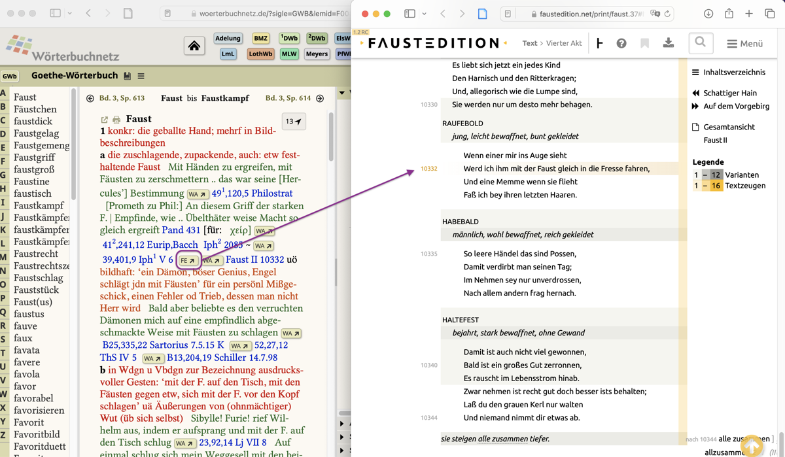
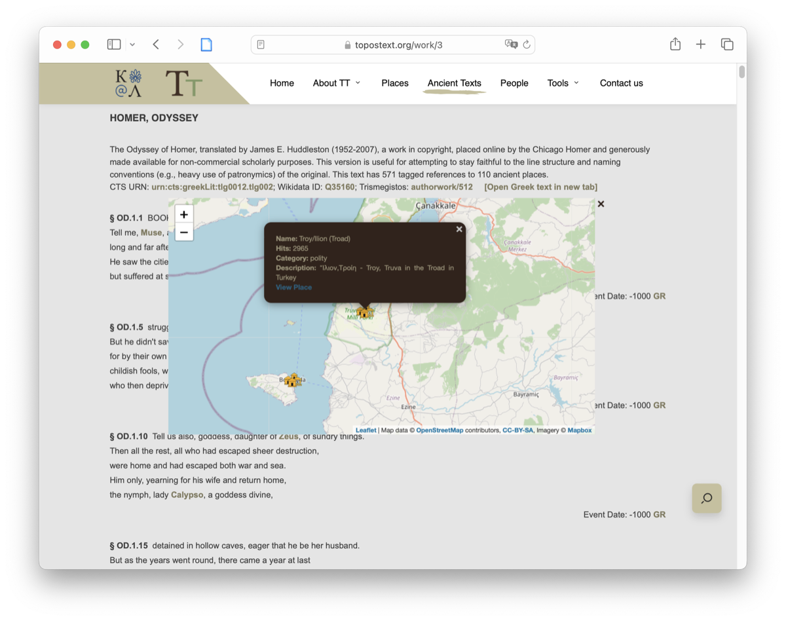

Scholarly Digital Editions: APIs and Reuse Scenarios
Elena Spadini, José Luis Losada Palenzuela
DH2023 "Collaboration as Opportunity", Graz, 13.07.2023
## TOC - Intro - Obtaining data: APIs - Reusing data: scenarios - Conclusions
## Intro Reusing content, reusing data: new forms of an old practice This paper is about - data reuse (no code and models reuse) - machine consumption (no human consumption)
## Question Which mechanisms editors can use to enable and facilitate data reuse? - Tentative state of the art for obtaining data (focus on APIs) - Concrete reuse scenarios
## Obtaining data
## How to retrieve data - whole dataset - web scraping - accessible dump (most common) - selection of data - API - other query endpoints: sparql
## API ### Future? ### It looks like ... - See for example: - Witt, Jeffrey C. 2018. "Digital Scholarly Editions and API Consuming Application". In *Digital Scholarly Editions as Interfaces*. Norderstedt: Schriften des Instituts für Dokumentologie und Editorik ### ... already for sometime - See for example: - Guéret, Christophe. 2015. "Stop Making Tools! Nobody Likes Them Anyway..." Presented at the eHumanities.nl. [https://www.ehumanities.nl/christophe-gueret-ehg-dans-vu](https://www.ehumanities.nl/christophe-gueret-ehg-dans-vu) - Boot, Peter, and Joris van Zundert. 2011. "The Digital Edition 2.0 and the Digital Library: Services, Not Resources". *Digitale Edition Und Forschungsbibliothek*, 44: 141-52.
## Some available APIs - TEI Publisher - Distributed Text Services (DTS) - *Perseus Project* - *CorrespSearch* - *Carl Maria von Weber Gesamtausgabe* - *Die Tagebücher von Andreas Okopenko* - *edition humboldt digital* - *Inscriptions of Israel and Palestine* - *Registres de la Comédie-Française* - *Sandrart.net* - *The Folger Shakespeare* - *The Proceedings of the Old Bailey* - *The School of Salamanca* Thanks to: Franzini, Greta. 2012. [*Catalogue of Digital Editions*](https://dig-ed-cat.acdh.oeaw.ac.at)
## Generic or specific to an edition | API | Type | | --------------------------------- | -------- | | DSP | Generic | | DTS | Generic | | TEI Publisher | Generic | | *CorrespSearch* | Specific | | *Carl Maria von Weber Gesamtausgabe* | Specific | | *edition humboldt digital* | Specific | | *Registres de la Comédie-Française* | Specific | | *Sandrart.net* | Specific | | *The Folger Shakespeare* | Specific | | *The Proceedings of the Old Bailey* | Specific |
## Documentation | Service | Documentation | | ------------------------------------- | ------------------------------------------------ | | DSP | [doc](https://docs.dasch.swiss/2022.09.01/DSP-API/03-apis/api-v2/) | | DTS | [doc](https://distributed-text-services.github.io/specifications/) | | TEI Publisher | [doc](https://teipublisher.com/exist/apps/tei-publisher/doc/documentation.xml?odd=docbook.odd&id=api) \| [open API doc](https://teipublisher.com/exist/apps/tei-publisher/api.html) | | *CorrespSearch* | [doc](https://correspsearch.net/en/api.html) | | *Carl Maria von Weber Gesamtausgabe* | [doc](https://weber-gesamtausgabe.de/en/Help/API_Documentation.html) \| [open API doc](https://weber-gesamtausgabe.de/api/v1/index.html) | | *edition humboldt digital* | [doc](https://edition-humboldt.de/about/index.xql?id=api&l=en) | | *Registres de la Comédie-Française* | [doc](https://hack.cfregisters.org/fr/) \| [Postman collection](https://hack.cfregisters.org/en/receipts/api#postman) | | *Sandrart.net* | [doc](http://ta.sandrart.net/en/info/services/rest/) | | *The Folger Shakespeare* | [doc](https://www.folgerdigitaltexts.org/api) | | *The Proceedings of the Old Bailey* | [doc](https://www.oldbaileyonline.org/static/DocAPI.jsp) |
Weber Open API
1/2
Weber Open API
2/2
## Data and metadata formats | | API | on page | dump | | ------------------------ | ------------------------------------- | ------------------------ | ------------------------ | | DSP and DSP-APP | Data and metadata (xml-tei, json-ld, xml-rdf, turtle) | no | no | | DTS | Data and metadata (xml-tei, json) | n/a | n/a | | TEI Publisher | Data and metadata (tei-xml, html, pdf, tex, epub) | Data and metadata (tei-xml, pdf, tex, epub) | n/a | | *CorrespSearch* | Metadata (xml-tei, json-tei, beacon, csv) | n/a | Metadata (xml-tei, json-tei, beacon, csv) | | *Carl Maria von Weber Gesamtausgabe* | Data and metadata (xml-tei, json-ld, beacon, html, txt) | Data and metadata (xml-tei, txt) | no | | *edition humboldt digital* | Metadata (oai-dc, xml, beacon) | Data and metadata (xml-tei) | Data and metadata (xml-tei) | | *Registres de la Comédie-Française* | Metadata (json) | no | Metadata (PostgreSQL) | | *Sandrart.net* | Metadata (xml, json) | no | Data and metadata (xml-tei, rdf) | | *The Folger Shakespeare* | Data and metadata (txt, html) | Data and metadata (xml-tei, html, txt, pdf, doc) | Data and metadata (xml-tei, html, txt, pdf, doc) | | *The Proceedings of the Old Bailey* | Data and metadata (xml-tei, json, zip) | Data and metadata (xml-tei, print) | Data and metadata (xml-tei) |
## API requests | | scope within text document | parameters | | ------------------------ | -------------------------------- | ---------- | | DSP | content and structure (elements) | yes | | DTS | structure (anchors) | yes | | TEI Publisher | content | yes | | *CorrespSearch* | content | yes | | *Carl Maria von Weber Gesamtausgabe* | content and structure (elements) | yes | | *edition humboldt digital* | content | yes | | *Registres de la Comédie-Française* | content | yes | | *Sandrart.net* | content | no | | *The Folger Shakespeare* | content | yes | | *The Proceedings of the Old Bailey* | content | yes |
## Accepted IDs | | Accepted IDs | | ------------------------ | ---------------------------------------------------------------------------------------------- | | DSP | internal | | DTS | internal | | TEI Publisher | internal | | *CorrespSearch* | GND, VIAF, BNF, LC, NDL, Geonames | | *Carl Maria von Weber Gesamtausgabe* | internal, GND, VIAF, Wikidata | | *edition humboldt digital* | internal | | *Registres de la Comédie-Française* | internal | | *Sandrart.net* | Arachne, BritishMuseum, Census, GeoNames, GKD, GoogleBooks, KHM, NationalGallery, PND, Rijksmuseum, SWD, TGN, ULAN, VD16, VD17, VIAF, VKK | | *The Folger Shakespeare* | internal | | *The Proceedings of the Old Bailey* | internal |
slides 43,44,(46)
## Reusing data ### What to reuse → goal - Text (documentary, diplomatic, critical, etc.) *→* Text analysis (literary, linguistic, training data,...) - Text *→* scholarly editing (collation, complete works,...) - Archival documents (manuscripts, publications, etc.) *→* catalogues - Entities *→* prosopography, gazetteers - All *→* replication (peer review, update)
## Scenarios - Editions data in dictionaries - Combining digital editions and gazetteers - Detecting intertextuality in drama - Search multiple data sets with the same authority record <br><br> <span style="font-size: 0.8em;">Elena Spadini, José Luis Losada Palenzuela, "Reusing data from editions", in James O'Sullivan (ed.), _Digital Editing & Publishing in the Twenty-First Century_ [2023].</span>
## Scenario 1 ### Editions data in dictionaries - Scholarly editions within dictionaries (not the another way around). - Digital historical dictionaries ([OED](https://www.oed.com), [TLIO](http://tlio.ovi.cnr.it/TLIO), [DA](https://apps2.rae.es/DA.html)) still citing printed editions. - Digital edition not fully integrated in academia; technical reasons against stable referencing (lack of PI); text sections (sentence, a paragraph, or a word in context). - ☞ Distributed Text Services (DTS).
### _Goethe-Wörterbuch_ ([GWb](https://www.woerterbuchnetz.de/GWB)) ← _Faust Edition_ ([FA](https://www.faustedition.net)) <div class="cita" style="font-size: 100%">"The references from Goethe's writings cited in the dictionary should be directly accessible as digital resources in the best currently available digital form, supplemented by further digitally accessible references from modern scholarly editions of Goethe's works." <span class="fuente">(Müller and Niedermeier 2022: 153)</span></div>
<h3 style="font-size: 25px;">“<a href="https://www.woerterbuchnetz.de/GWB?lemid=F00806"><i>Faust</i></a>”, <i>Goethe-Wörterbuch</i>, digitalisierte Fassung im Wörterbuchnetz des Trier Center for Digital Humanities, Version 01/23.</h3> 
### _Dictionnaire Étymologique de l'Ancien Français ([DEAF](https://www.hadw-bw.de/deaf))_ ← _Documents linguistiques galloromans_
### Dictionary of Old Norse Prose ([ONP](https://onp.ku.dk/onp/onp.php)) ← ONP [Reader](https://onp.ku.dk/onp/onp.php?q32) <img style="width: 90%; box-shadow: none;" src="imagenes/graz2023_ONP.png"/>
## Scenario 2 ### Digital editions and gazetteers: _ToposText_ - Ancient texts and mapped places. - Beyond the scholarly community. - Data from: Perseus Library and Pleiades project. - ToposText policy: <div class="cita" style="font-size: 0.8em">“[texts] have been stripped of footnotes and other scholarly apparatus, [...] ToposText is not a substitute for the most recent scholarly edition of a given work”. <span class="fuente">[ToposText](https://topostext.org), version 3.0, Aikaterini Laskaridis Foundation</span></div>
### [ToposText](https://topostext.org), version 3.0, Aikaterini Laskaridis Foundation 
## Conclusions Potential for remediation of contents at the crossroads of disciplines Technical infrastructure, from minimal (data dump or single resource download in XML-TEI) to ideal (multiple formats and access points, external persistent identifiers, documentation) **Planning in advance for reuse**
otro